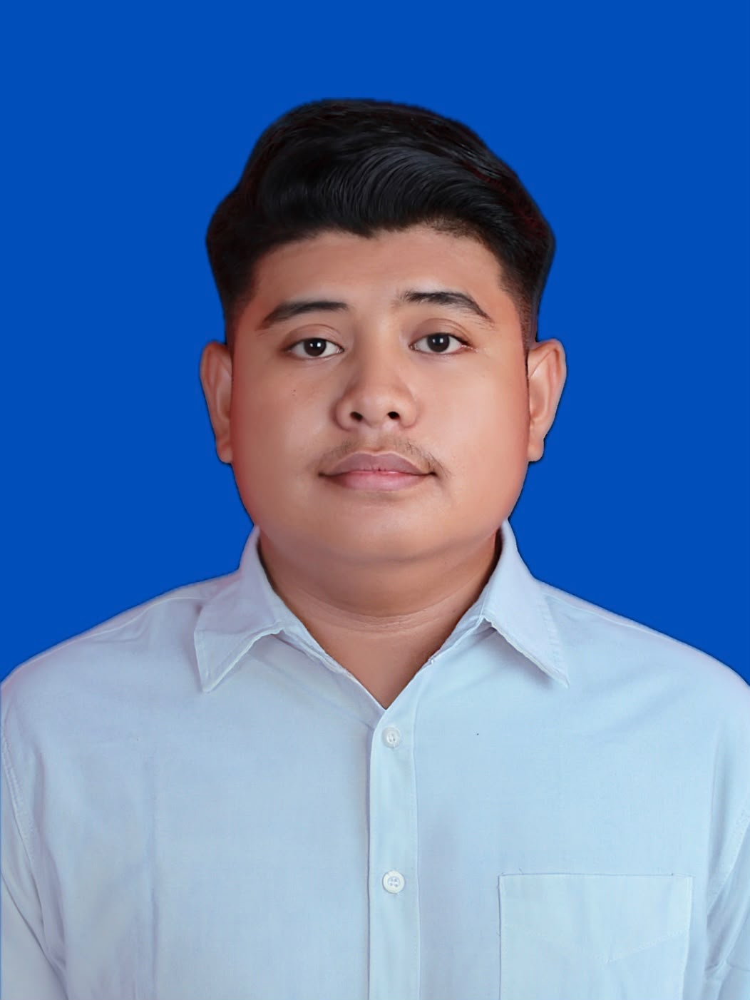
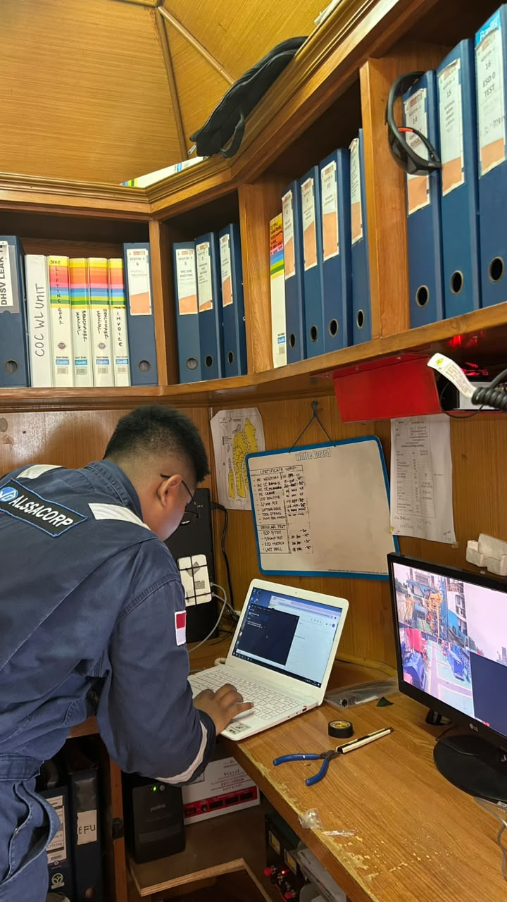
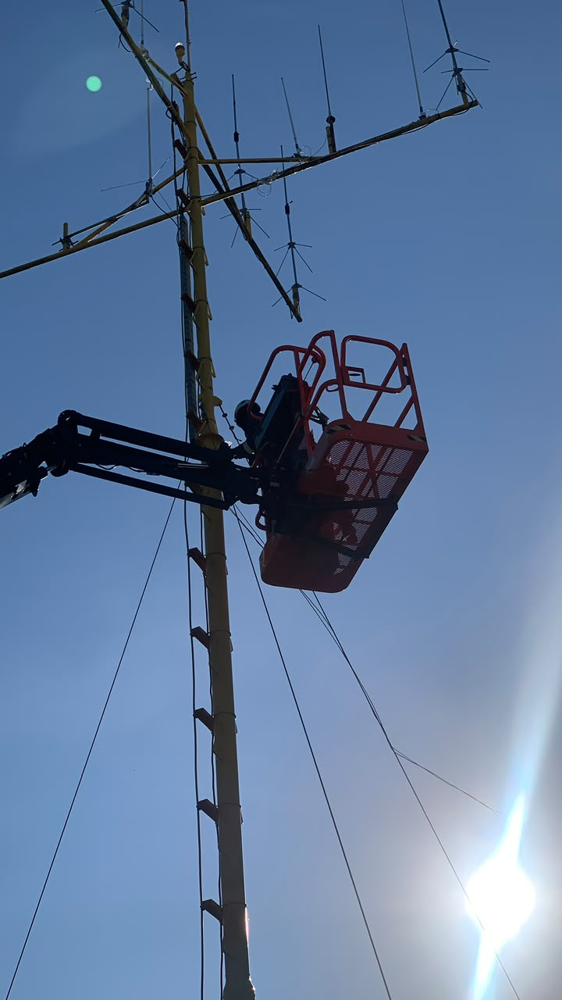
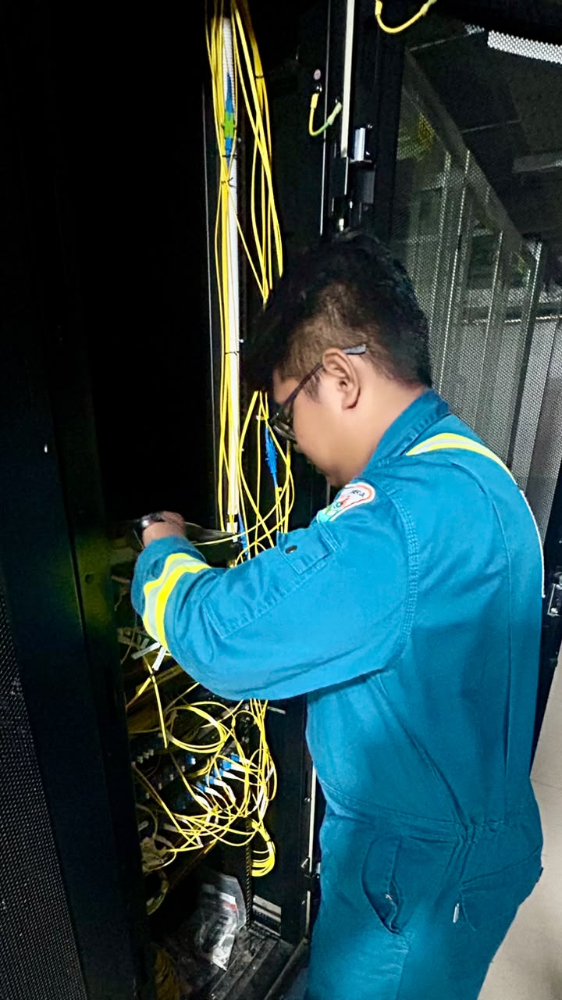

[Reikhal Akbar Damanik]
Sebagai Engineer yang berpengalaman dalam bidang telekomunikasi dan sistem komunikasi nirkabel dan mahasiswa program sarjana di bidang teknik informatika. Selain bekerja saya juga memiliki kesibukan berkuliah di Universitas Siber Asia pada program Sarjana Teknik Informatika yang dapat membantu saya dalam mengembangkan kemampuan teknis dan profesional saya.

Project Radio Point-to-Multipoints di PT Pertamina Hulu Mahakam.

Project Radio VHF di PT Pertamina Hulu Mahakam.

Troubleshoot di lapangan untuk support PT.Petrosea di Wilayah Kerja British Petroleum (BP) Indonesia guna memastikan keandalan sistem telekomunikasi.